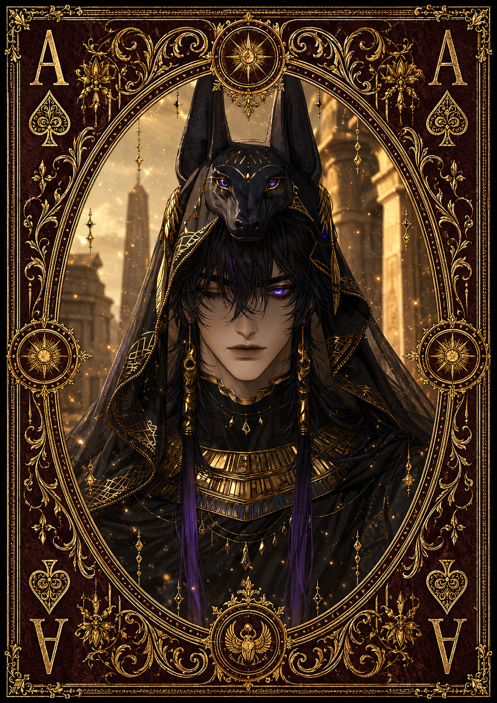

| Race | Anubian |
| Gender | Male |
| Age | 37 Years |
| Nation | Arkhan Wastes |
| Weapon | Sunforged Khopesh |
| Magic | Solar Guardian Magic |
Anubreak is one of the highest-ranking generals of the Arkhan Wastes and a devoted servant of King Kaelor. Known throughout the nation's military as the General of Anubis, he commands his forces with absolute discipline and considers the laws of Arkhan something to be followed without exception.
Serious, severe, and remarkably controlled, Anubreak rarely allows personal feelings to interfere with his responsibilities. He trains his subordinates relentlessly and expects the same discipline from every soldier under his command. His methods can appear excessively harsh, but his severity comes from a belief that an unprepared warrior is a danger to both themselves and everyone fighting beside them.
Anubreak is an accomplished warrior who wields a Sunforged Khopesh and practices Solar Guardian Magic, an ancient defensive art used by elite warriors of the Arkhan Wastes. His abilities allow him to reinforce his defenses and channel concentrated solar energy through his weapon. Despite his considerable strength, he has a low reputation for danger because he does not attack without justification.
Above everything else stands his loyalty to King Kaelor and the laws he represents. Anubreak does not seek glory, wealth, or political influence; his purpose is to protect Arkhan and ensure that its military remains prepared for whatever threatens the nation. To his soldiers he may be an unforgiving commander, but to the kingdom he serves, he is one of its most dependable guardians.